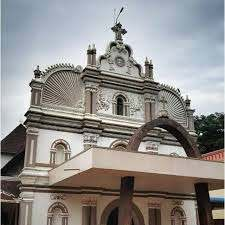
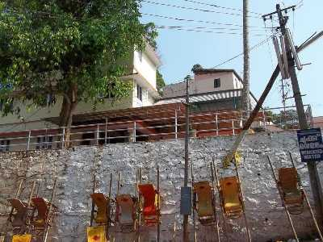

Gavi
Gavi is situated some 14 km away from the famed Periyar Tiger Reserve and is heaven on Earth, quite literally

Thumpamon Pally
St. Mary's Orthodox Syrian Cathedral is an Orthodox ancient church located in Thumpamon . . The first church was built in AD 717. The Architectural style of the church is Gothic Revival style.

Aranmula
Aranmula is a place mainly known for its expert craftsmanship and snake boat race organized on the final day of Onam Festival. The most renowned art of metal mirror of Aranmula Kannadi has its roots originated from this place.

Sabarimala
One of the religious hubs of South India, Sabarimala houses Sastha Temple situated in Pathanamthitta . Dedicated to Lord Ayyappa, this temple is situated in the lap of nature amid the dangerous hills of Western Ghats.